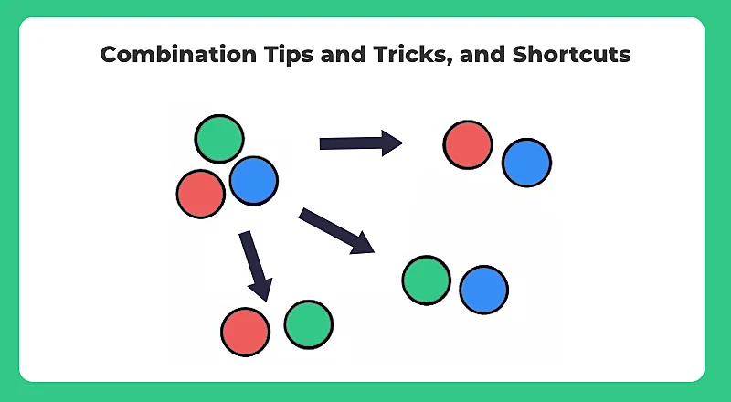
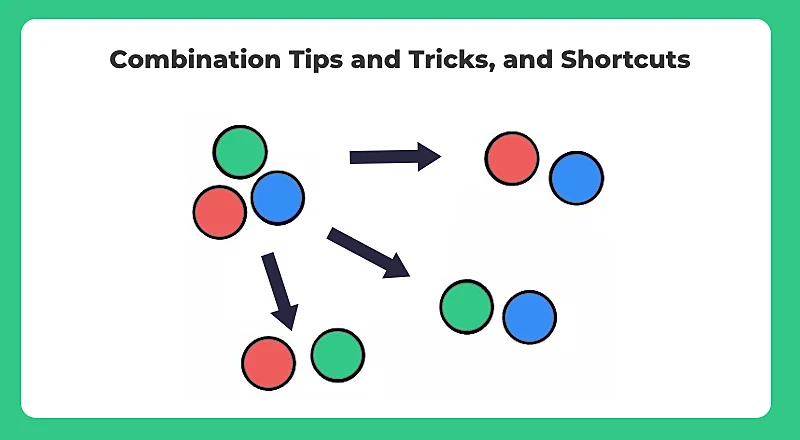

flowchart LR
A[Probability] --> B(Permutation and Combination)
B --> C{Permutation}
B --> D{Combination}
C --> E[Permutation with Repeats]
C --> F[Permutation without Repeats]
D --> H[Combination with Repeats]
D --> I[Combination without Repeats]
simple_quarto_website
This is a Quarto website.
To learn more about Quarto websites visit https://quarto.org/docs/websites.
Permutations and Combinations
Comparison Between Permutation and Combination
Permutations
Combinations
- The number of ways that n elements can be arranged in order
- In permutation, every different ordering counts as a distinct permutation. For instance, the ordering (a,b,c,d) is distinct from (a,b,d,c).
- Order of arrangement matters in permutation.
In combination, every different ordering does NOT count as a distinct combination. For instance, the ordering (a,b,c,d) is the same as the ordering (a,b,d,c). Order does not matter in combination.
Permutation Formula
\[ P(n,k) = \frac{n!}{(n-k)!}\ \]
Combination Formula
\[ C(n,k) = {n \choose k} = \frac{n!}{k!(n-k)!}\ \]
Permutation Example
- Suppose 3 people are atteding a meeting and there are five chairs. How many such distinct sittings are possible?
\(P(5,3) = \frac{5!}{2!} = 5 \times 4 \times 3 = 120\)
- Suppose we need to know the number of possibilities for a four-digit lock.
\(P(10,4) = \frac{10!}{4!} = 10 \times 9 \times 8 \times 7= 5040\)
Combination Example
- We wish to form committees of 3 people from a total of 5 people. How many such distinct committees are possible?
\(C(5,3) = {5 \choose 3} = \frac{5!}{3!2!} = \frac{5 \times 4 \times 3 \times 2 \times 1}{3 \times 2 \times 1 \times 2 \times 1} = 5 \times 2 = 10\)
- Suppose we have 10 pizza toppings, and we’re picking 4 of them (without repetitions).1
\(C(10,4) = {10 \choose 4} = \frac{10!}{4!6!} = \frac{10 \times 9 \times 8 \times 7 \times 6 \times 5 \times 4 \times 3 \times 2 \times 1}{4 \times 3 \times 2 \times 1 \times 6 \times 5 \times 4 \times 3 \times 2 \times 1} = 210\)
Permutation and Combination with and without repetition
| With Repetition2 | Without Repetition |
|---|---|
| \(n^r\) | \(\frac{n!}{(n-k)!}\) |
| \(\frac{r+n-1}{r! \times (n-1)!}\) | \(\frac{n!}{k!(n-k)!}\ \) |
To have a better understanding of the formulas and examples related to permutation and combination with repetitions: https://www.qualitygurus.com/permutations-and-combination/
 
 
Add References
see (Makinde 2014) see (Frost 2023)
References
Frost, Jim. 2023. “Permutation Vs Combination: Differences &Amp; Examples.” Statistics By Jim. https://statisticsbyjim.com/probability/permutation-vs-combination/.
Makinde, Deborah Olufunmilayo. 2014. “Teaching Permutation and Combination Using Play-Way Method.” Journal of Education and Practice 5 (28): 209–11.
Footnotes
In the examples provided above, we did not repeat an element in any arrangement, as people cannot be chosen twice and the same toppings cannot be added twice for the pizzas. Thus we used the general formula to solve the problems.↩︎
For instance, if you are to arrange three elements, a,b,c, in order, the possible permutations are abc, bac, bca, cab, cba. However, if we repeat elements, then we will have many more arrangements such as aaa, aab, aba, abb etc, and this is why we use the formula n r.↩︎